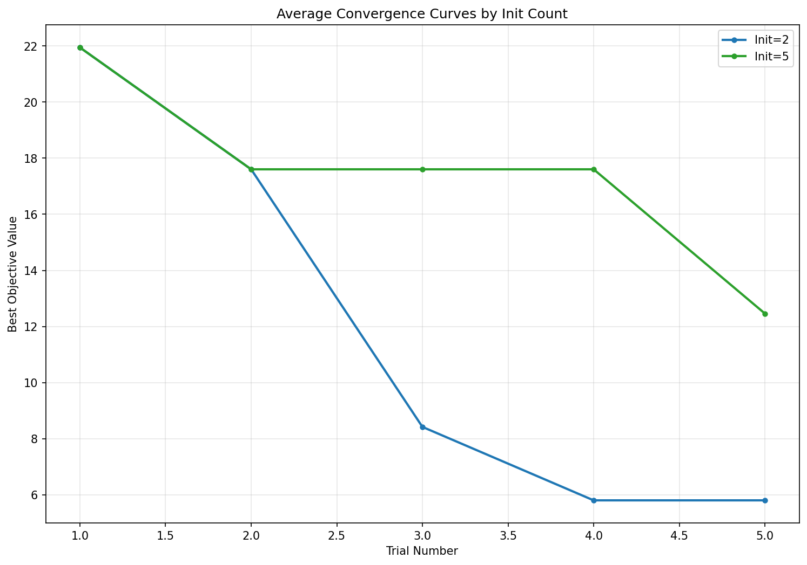

Latest Branin Campaign Results
Workflow Run: 19413980843
Completed: November 17, 2025 at 00:15:51 UTC
Duration: ~26 minutes
Status: ✓ Success
Unique Run IDs: Smoke test (v6lrfo), Combined (6chxqq)
Smoke Test Results
Quick validation with 2 init counts (2 and 5), 2 repeats, 5 trials
1. Convergence Curves

2. Sanity Check Plots

Combined Results - Final Sanity Check
Combined from all 15 parallel jobs covering init counts 2-30

Note: The convergence curves plot for the combined full results appears to be missing from this run's artifacts.
The combined results include sanity check plots showing performance across all initialization counts.